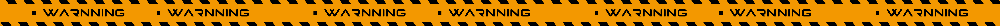

TEST-用css实现矩形扩散动画效果制作一个简约科技按钮
测试目的：用css实现矩形扩散动画效果简单实现一个简约科技按钮
前几天在网上找漂亮的功能组件时看见有人用css实现圆形的具有波纹扩散动画效果的按钮，效果挺好看的，但是作为设计作者觉得矩形的过渡棱角科技感更饱满一些，所以作者借助这种思路用css简单的实现了一个矩形扩散的按钮运用在自己的项目中，顺便拿出来分享一下思路。
解决对象是按下的前后的一个动画的变化效果
当按钮按下时光环会从贴近按钮的边缘向外扩散，然后消失，给人一种科技波纹的效果
这里附上代码
.button {
width: 50px;
height: 50px;
display: inline-block;
background: linear-gradient(45deg,#00eaff,#006aff) ;
color: #fff;
border-radius: 5px;
border: none;
cursor: pointer;
position: relative;
box-shadow: 0 2px 25px rgba(0, 234, 250, 0.5);
outline: 0;
}
.button:active {
transform: scale(0.95);
box-shadow: 0 2px 25px rgba(0, 234, 255, 0.5);
}
.button::before{
width: 45px;
height: 45px;
border-radius: 5px;
border: 2px solid rgba(0, 234, 250, 0.5);
position:absolute;
z-index: -1;
content: '';
left: 0px;
right: 0px;
top: 0px;
bottom: 0px;
animation: bubble 0.75s ;
-webkit-animation: bubble 0.75s ;
}
.button:active::before {
animation: none;
}
@keyframes bubble {
100% {
transform: scale(1.5) ;
opacity: 0;
}
}
测试效果：https://codepen.io/tt1500891331/pen/dyRgBGy

目前这个按钮功能已经实现，但是还存在一个问题是当页面加载或是重新刷新的时候，动画会走一遍，如果有大佬阅读本文章请帮忙在留言下回复一下，有没有在不使用js的前提下靠css的本身能够让他在加载或刷新过程中跳过动画过渡呢